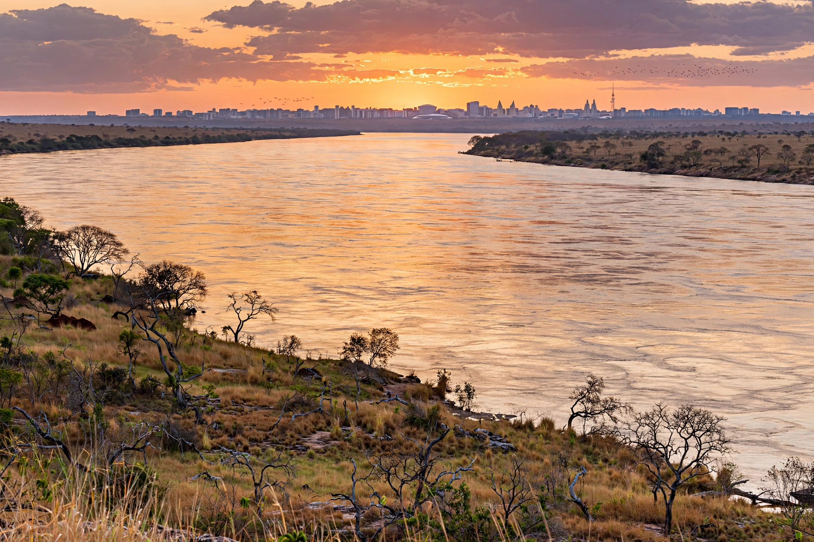

Tocantins
| Tocantins | |
 | |
| Country | Brazil |
|---|---|
| Capital & largest city | Palmas |
| Created | 1988 (from northern Goiás) |
| Area | c. 277,423 km² |
| Population | c. 1.58 million (2022 census) |
| Abbreviation | TO |
Tocantins is a state in Brazil's North Region, created in 1988 when the northern portion of Goiás was separated under the new federal constitution, making it Brazil's newest state. Its capital, Palmas, is a planned city founded in 1989.
Geography
The state is named after the Tocantins River, which flows north through its centre; its great tributary the Araguaia forms the western border and contains Bananal Island, the world's largest fluvial island. The landscape is mostly Cerrado savanna, transitioning to Amazon rainforest in the north. The Jalapão region in the east is noted for dunes, waterfalls, and golden-grass crafts.
Economy
Tocantins's economy rests on agriculture and cattle ranching — soy, rice, maize, and beef — together with hydroelectric generation on the Tocantins River (including the Lajeado/Luís Eduardo Magalhães plant near Palmas) and growing transport links between Brazil's centre-west and northern ports.
See also
Tocantins River · Goiás · List of state capitals in Brazil
Recreated from memory as a standalone page.